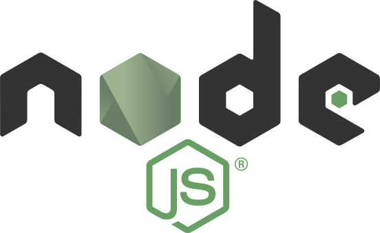
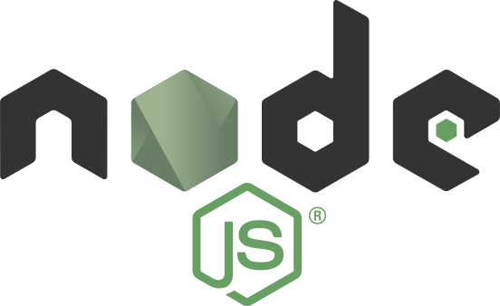
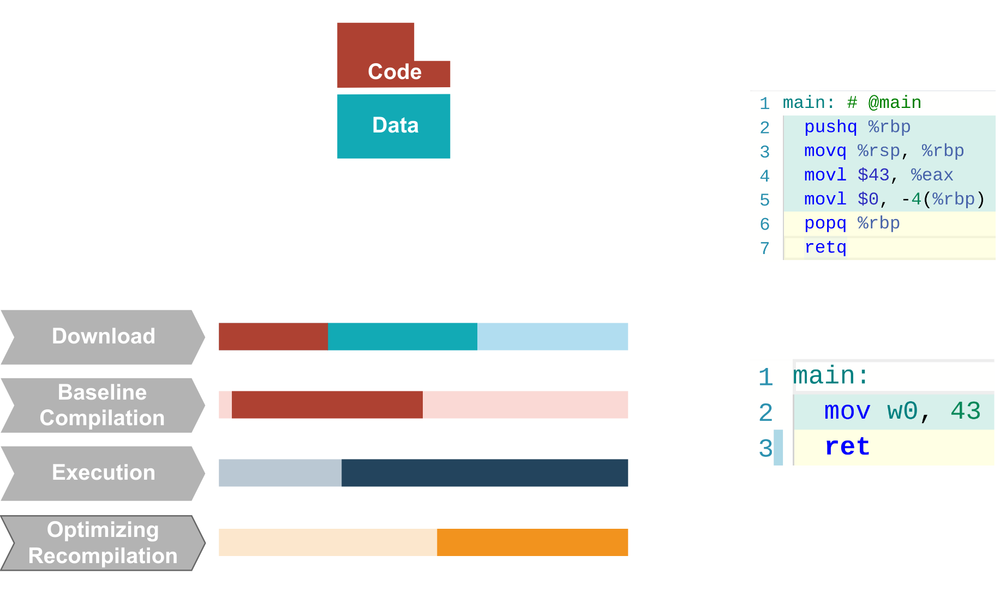
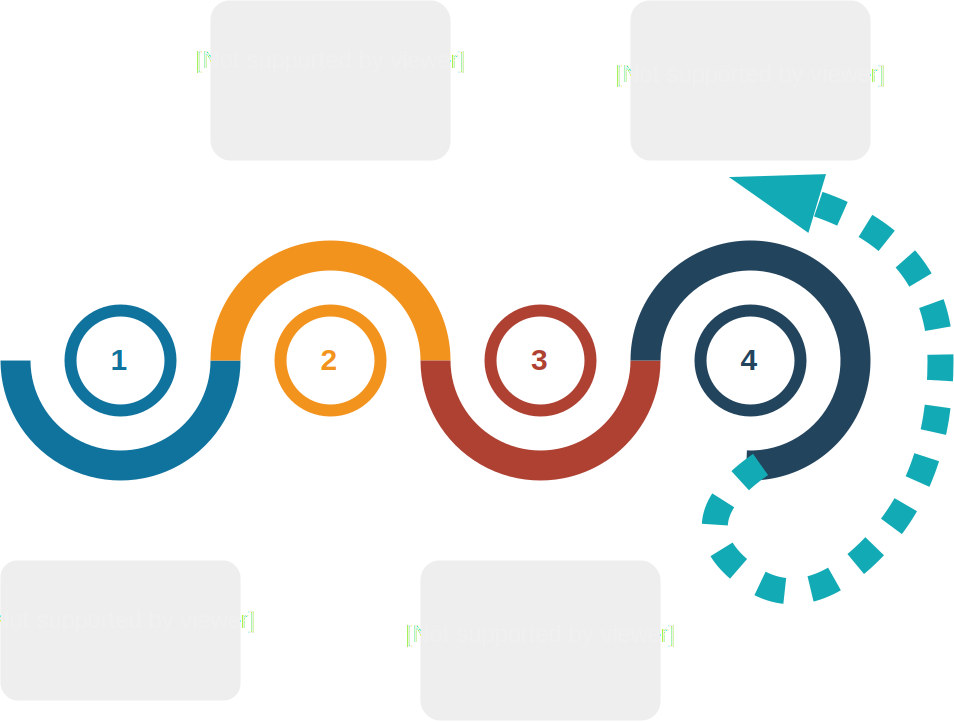
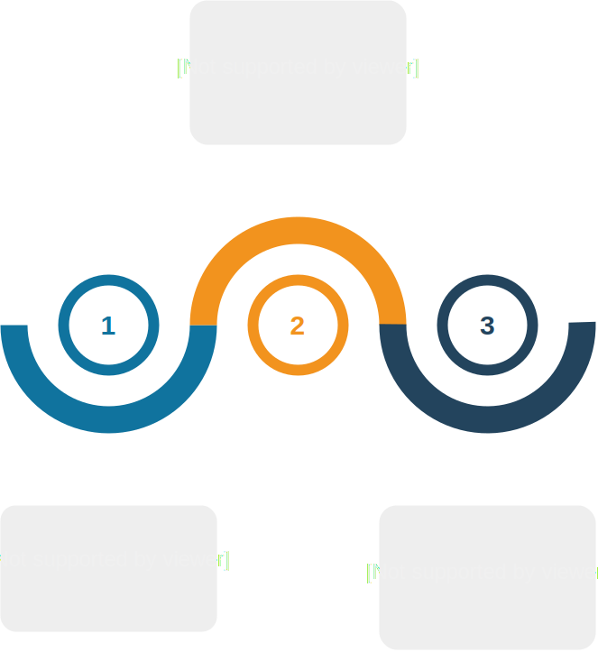
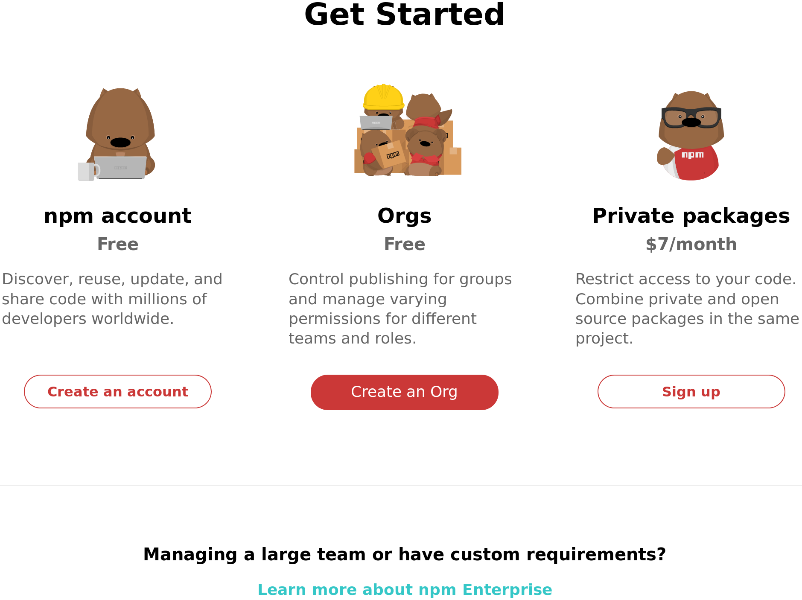
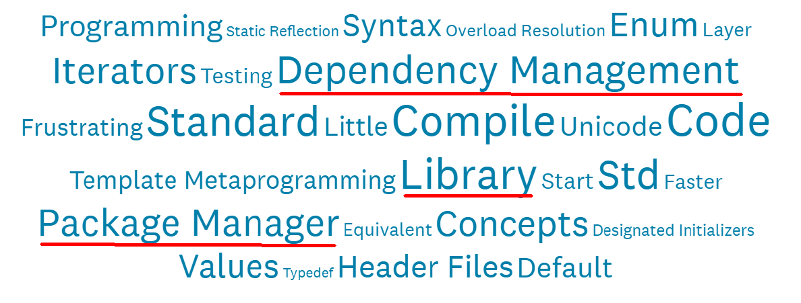
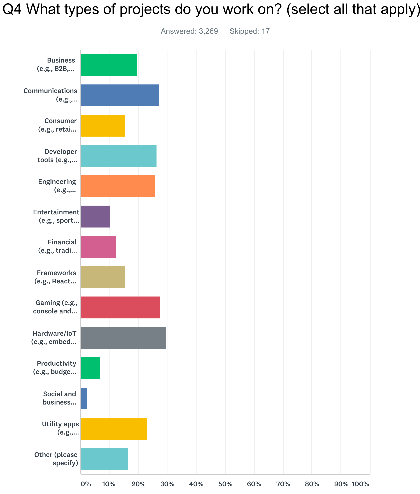
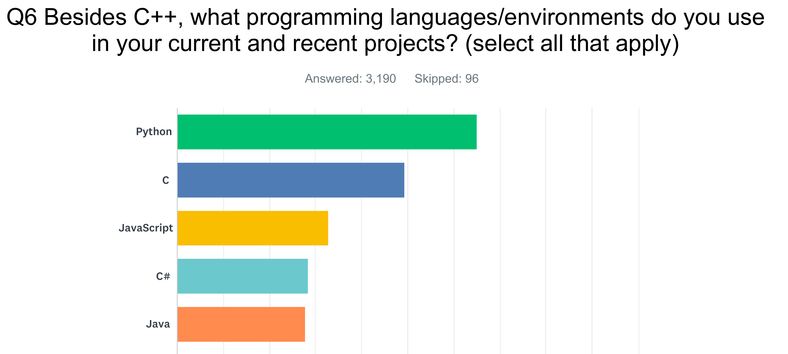
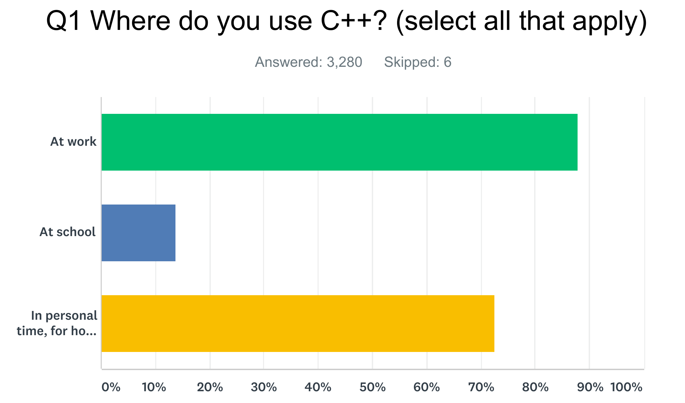

C++ Everywhere with
WebAssembly
Damien Buhl (alias daminetreg) at nxxm.github.io
WebAssembly Primer
WebAssembly
- Binary instruction format
- Stack based "vm"
- Enables C++ web browser & server apps
w3c open standard
available everywhere in v1.0

 

Portable Binary instructions
- Small files
- Fast decoding
- Reduced memory usage
- The syntheis & evolution of asm.js & PNaCl
WASM Module
- PE or Elf for the Web.
WASM Module structure
WASM Module structure
int main() {
return 43;
}WASM Module structure
~158 bytes
00 61 73 6d 01 00 00 00 01 08 02 60 00 00 60 00 |.asm.......`..`.|
01 7f 03 03 02 00 01 04 05 01 70 01 01 01 05 03 |..........p.....|
01 00 02 06 15 03 7f 01 41 80 88 04 0b 7f 00 41 |........A......A|
80 88 04 0b 7f 00 41 80 08 0b 07 2d 04 05 5f 6d |......A....-.._m|
61 69 6e 00 01 06 6d 65 6d 6f 72 79 02 00 0b 5f |ain...memory..._|
5f 68 65 61 70 5f 62 61 73 65 03 01 0a 5f 5f 64 |_heap_base...__d|
61 74 61 5f 65 6e 64 03 02 0a 09 02 02 00 0b 04 |ata_end.........|
00 41 2b 0b 00 28 04 6e 61 6d 65 01 1a 02 00 11 |.A+..(.name.....|
5f 5f 77 61 73 6d 5f 63 61 6c 6c 5f 63 74 6f 72 |__wasm_call_ctor|
73 01 04 6d 61 69 6e 02 05 02 00 00 01 00 |s..main....... |WASM Module structure
(module
(type (;2;) (func (result i32)))
(import "env" "getTotalMemory" (func (;1;) (type 2)))
(func (;21;) (type 2) (result i32)
i32.const 43
return)
(export "_main" (func 21))
(data (i32.const 1024) "\05\c0\de\00\be\e0 ... ")
)
Portable yet Native
WASM Runtime
WASM Runtime
- Native speed, no emulation
- C++ Heap & Stack is allocated in a contiguous memory segment
- No Garbage Collection: Memory management as usual
WASM Runtime: No Garbage Collection
WASM Runtime: WASM 2.0 ?
WASM Runtime
CppCon 2014: Chad Austin "Embind and Emscripten: Blending C++11, JavaScript, and the Web Browser"
WASM Runtime: Multithreading
- pthreads has been implemented and works
- but is based on SharedArrayBuffer...
Web Development
The Javascript rise
- Javascript is a dynamically typed language
- C++ is a statically typed language
- Two irreconcilable worlds ?
Javascript & C++
- They share one key philosophy...
- Openness, Flexibility & Extensibility
Neither Bjarne Stroustrup nor Brendan Eich wanted their language to be limited to what they could imagine.
Object.prototype ===template <class T>The TypeScript hype
Key selling point: Javascript that scales.
Types enable JavaScript developers to use [...] practices like static checking and code refactoring [...].
https://www.typescriptlang.org/
Wait Types ? Static Checking ?
- Isn't C++ all about this ?
- Could we use it to make Web Apps that scales ?
Can we make some room for C++ ?
Can we make some room for C++ ?
<script type="text/c++">#include <belle/vue/dom.hxx> #include <belle/vue/fx.hxx> int main() { using namespace belle::vue; auto banner_ts = get_element_by_id("banner_ts"); auto banner_cpp = get_element_by_id("banner_cpp"); fx::fade_out(banner_ts, [=]() mutable { banner_ts.setAttribute("style", "display:none;"); banner_cpp.setAttribute("style", "display:visible;"); fx::fade_in(banner_cpp); }); return 0; }</script>
Make some room for C++
Web Development until today in C++
- Mostly Backends
- Highly Available Backends
- People turn their webservices into C++ when they get victims of their success
Why wouldn't we write Web Apps in C++ more often ?
- Has a quite other expressiveness than TypeScript
- Highly Available Backends
- People turn their webservices into C++ when they get victims of their success
C++ Builds: Industrializing and scaffolding
- Let's use that time to write code.
- The Web did it.
- C++ can do it too.
2 hard realizations and 1 dream
- The C++ ecosystem is fragmented.
- Nobody wants yet-another-config file.
- The Dream that code is self-sufficient.
So... what is nxxm ?
More or less a Compiler connected to github.com.
So... it's purpose ?
Dependency & Secure upgrade management via github.com.
Key Benefits
- Easy code reuse.
- Supports any build system.
- Perfectly integrated in development tools.
- Builds by convention.
Key Features
- Zero installation needed.
- Zero config file: #include scanning.
- Zero dependency store: relies on github.com.
Killer Features
- Standalone project directory.
- CMake, Travis-CI & AppVeyor config generation.
- Software upgrade management.
- Simplistic UI to get started.
- Visual Studio Code Integration.
Demo
- Let's write an hello-world.
nxxm == merge(inglued + headerizer)
#include <nxxm/github.com>
#include <boost/algorithm/string/predicate.hpp>
// Download & dependency registration : cmake, ci...
void on_login(std::string username) {
using namespace boost::algorithm;
if starts_with(username, "😇") {
let_him_in();
}
}
Economic Model
| Community | Pro | Enterprise |
|---|---|---|
| Base Features |
|
|
| Free | 7€ / month by user | 5000€ / year for 20 User seat pack |
Copying npmjs

Our market
Source: C++ Developer Survey "Lite": 2018-02, 3200 respondents.
Dependencies
Describe something you need to do regularly when writing C++ code that you wish could be easier in some way?

Source: C++ Developer Survey "Lite": 2018-02, 3200 respondents.
Why not just dependencies ?
Upgrade management and easy-rollout is a killer for the main development field.

Source: C++ Developer Survey "Lite": 2018-02, 3200 respondents.
The rise
Percolating in other languages.

Source: C++ Developer Survey "Lite": 2018-02, 3200 respondents.
Do they have money ?
They do.

Source: C++ Developer Survey "Lite": 2018-02, 3200 respondents.
We can do it.
- npm, Inc. is a company founded in 2014. Its executive team is:
Isaac Z. Schlueter, CEO
Laurie Voss, COO
CJ Silverio, CTO
Roadmap
Release 1 planned by Mid of June on the basis of inglued.
The Roadmap is easy and clear, there is nothing unknown. See here.
nxxm needs your help
- We can release early and fast: Mid of June.
- We can dogfood the tool then :
- Looking for contract customers: 20%.
- contract work using the tool: 40%.
- improve the tool: 40%.
- While no-contract we can build-up slight.li further.
It's what the devs want
- There already is 7 stars on inglued, with zero-marketing.
- Neither Hunter, Conan nor Vcpkg are really getting used.
- Because it's easy & programming language knowledge suffice.
You are welcome
This is a starting point for cashing-in.
It is the WebAssembly deps manager...